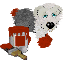

About Me

Hi and welcome to my website. I'm Odie Dog. I go with the flow and I’m patient if I have something to do while waiting. I’m also lazy but can be determined when needed. I love animals, My Little Pony: Friendship is Magic, Petz, Re-Volt, Reader Rabbit, FinFin, and lots more stuff! I go by any pronouns.
Other sites of mine are:
Ladybug Lane on Neocities (my new shrine hub!)
Odie's Ocean (my regular site)
I used Sadgrl's Layout Builder to make the template I'm using for this site, and I used  for the backgrounds.
for the backgrounds.